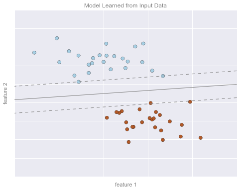
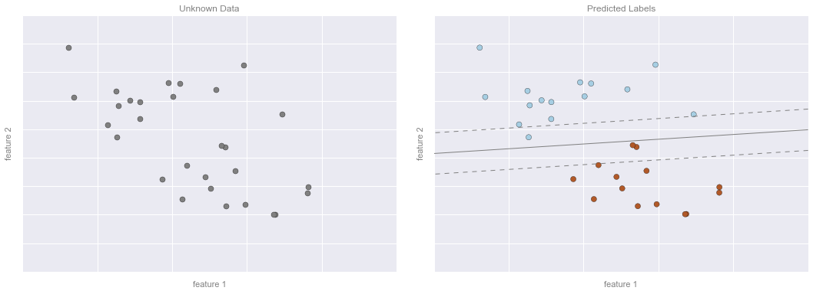
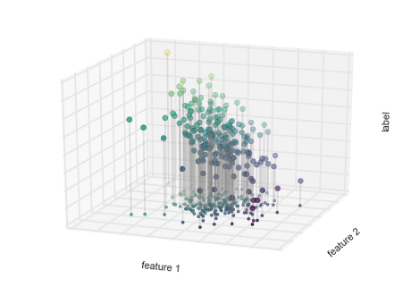
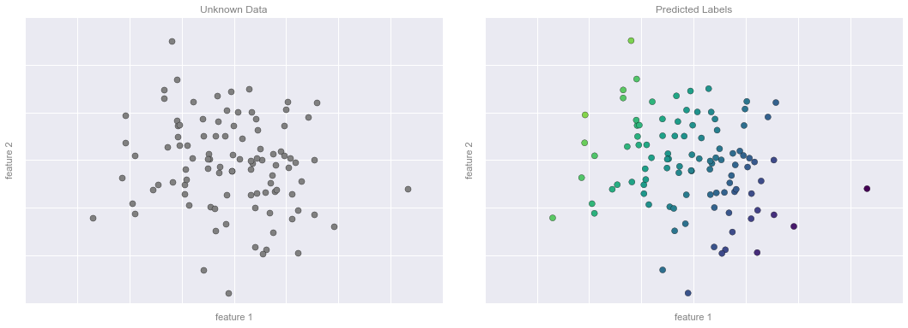
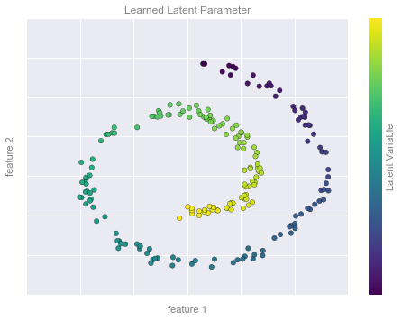
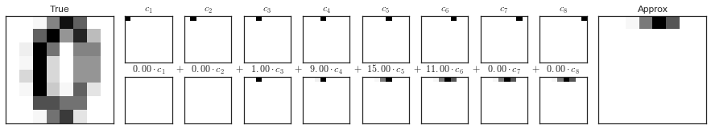
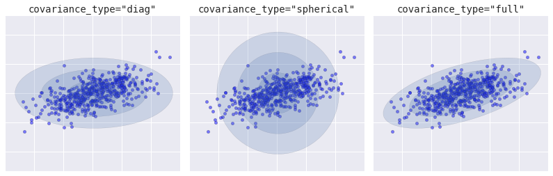

%matplotlib inline
import matplotlib.pyplot as plt
import numpy as np
import seaborn as sns45 Appendix: Figure Code

This notebook contains an excerpt from the Python Data Science Handbook by Jake VanderPlas; the content is available on GitHub.
The text is released under the CC-BY-NC-ND license, and code is released under the MIT license. If you find this content useful, please consider supporting the work by buying the book!
< Further Machine Learning Resources | Contents |

Many of the figures used throughout this text are created in-place by code that appears in print. In a few cases, however, the required code is long enough (or not immediately relevant enough) that we instead put it here for reference.
import os
if not os.path.exists('figures'):
os.makedirs('figures')45.1 Broadcasting
# Adapted from astroML: see http://www.astroml.org/book_figures/appendix/fig_broadcast_visual.html
import numpy as np
from matplotlib import pyplot as plt
#------------------------------------------------------------
# Draw a figure and axis with no boundary
fig = plt.figure(figsize=(6, 4.5), facecolor='w')
ax = plt.axes([0, 0, 1, 1], xticks=[], yticks=[], frameon=False)
def draw_cube(ax, xy, size, depth=0.4,
edges=None, label=None, label_kwargs=None, **kwargs):
"""draw and label a cube. edges is a list of numbers between
1 and 12, specifying which of the 12 cube edges to draw"""
if edges is None:
edges = range(1, 13)
x, y = xy
if 1 in edges:
ax.plot([x, x + size],
[y + size, y + size], **kwargs)
if 2 in edges:
ax.plot([x + size, x + size],
[y, y + size], **kwargs)
if 3 in edges:
ax.plot([x, x + size],
[y, y], **kwargs)
if 4 in edges:
ax.plot([x, x],
[y, y + size], **kwargs)
if 5 in edges:
ax.plot([x, x + depth],
[y + size, y + depth + size], **kwargs)
if 6 in edges:
ax.plot([x + size, x + size + depth],
[y + size, y + depth + size], **kwargs)
if 7 in edges:
ax.plot([x + size, x + size + depth],
[y, y + depth], **kwargs)
if 8 in edges:
ax.plot([x, x + depth],
[y, y + depth], **kwargs)
if 9 in edges:
ax.plot([x + depth, x + depth + size],
[y + depth + size, y + depth + size], **kwargs)
if 10 in edges:
ax.plot([x + depth + size, x + depth + size],
[y + depth, y + depth + size], **kwargs)
if 11 in edges:
ax.plot([x + depth, x + depth + size],
[y + depth, y + depth], **kwargs)
if 12 in edges:
ax.plot([x + depth, x + depth],
[y + depth, y + depth + size], **kwargs)
if label:
if label_kwargs is None:
label_kwargs = {}
ax.text(x + 0.5 * size, y + 0.5 * size, label,
ha='center', va='center', **label_kwargs)
solid = dict(c='black', ls='-', lw=1,
label_kwargs=dict(color='k'))
dotted = dict(c='black', ls='-', lw=0.5, alpha=0.5,
label_kwargs=dict(color='gray'))
depth = 0.3
#------------------------------------------------------------
# Draw top operation: vector plus scalar
draw_cube(ax, (1, 10), 1, depth, [1, 2, 3, 4, 5, 6, 9], '0', **solid)
draw_cube(ax, (2, 10), 1, depth, [1, 2, 3, 6, 9], '1', **solid)
draw_cube(ax, (3, 10), 1, depth, [1, 2, 3, 6, 7, 9, 10], '2', **solid)
draw_cube(ax, (6, 10), 1, depth, [1, 2, 3, 4, 5, 6, 7, 9, 10], '5', **solid)
draw_cube(ax, (7, 10), 1, depth, [1, 2, 3, 6, 7, 9, 10, 11], '5', **dotted)
draw_cube(ax, (8, 10), 1, depth, [1, 2, 3, 6, 7, 9, 10, 11], '5', **dotted)
draw_cube(ax, (12, 10), 1, depth, [1, 2, 3, 4, 5, 6, 9], '5', **solid)
draw_cube(ax, (13, 10), 1, depth, [1, 2, 3, 6, 9], '6', **solid)
draw_cube(ax, (14, 10), 1, depth, [1, 2, 3, 6, 7, 9, 10], '7', **solid)
ax.text(5, 10.5, '+', size=12, ha='center', va='center')
ax.text(10.5, 10.5, '=', size=12, ha='center', va='center')
ax.text(1, 11.5, r'${\tt np.arange(3) + 5}$',
size=12, ha='left', va='bottom')
#------------------------------------------------------------
# Draw middle operation: matrix plus vector
# first block
draw_cube(ax, (1, 7.5), 1, depth, [1, 2, 3, 4, 5, 6, 9], '1', **solid)
draw_cube(ax, (2, 7.5), 1, depth, [1, 2, 3, 6, 9], '1', **solid)
draw_cube(ax, (3, 7.5), 1, depth, [1, 2, 3, 6, 7, 9, 10], '1', **solid)
draw_cube(ax, (1, 6.5), 1, depth, [2, 3, 4], '1', **solid)
draw_cube(ax, (2, 6.5), 1, depth, [2, 3], '1', **solid)
draw_cube(ax, (3, 6.5), 1, depth, [2, 3, 7, 10], '1', **solid)
draw_cube(ax, (1, 5.5), 1, depth, [2, 3, 4], '1', **solid)
draw_cube(ax, (2, 5.5), 1, depth, [2, 3], '1', **solid)
draw_cube(ax, (3, 5.5), 1, depth, [2, 3, 7, 10], '1', **solid)
# second block
draw_cube(ax, (6, 7.5), 1, depth, [1, 2, 3, 4, 5, 6, 9], '0', **solid)
draw_cube(ax, (7, 7.5), 1, depth, [1, 2, 3, 6, 9], '1', **solid)
draw_cube(ax, (8, 7.5), 1, depth, [1, 2, 3, 6, 7, 9, 10], '2', **solid)
draw_cube(ax, (6, 6.5), 1, depth, range(2, 13), '0', **dotted)
draw_cube(ax, (7, 6.5), 1, depth, [2, 3, 6, 7, 9, 10, 11], '1', **dotted)
draw_cube(ax, (8, 6.5), 1, depth, [2, 3, 6, 7, 9, 10, 11], '2', **dotted)
draw_cube(ax, (6, 5.5), 1, depth, [2, 3, 4, 7, 8, 10, 11, 12], '0', **dotted)
draw_cube(ax, (7, 5.5), 1, depth, [2, 3, 7, 10, 11], '1', **dotted)
draw_cube(ax, (8, 5.5), 1, depth, [2, 3, 7, 10, 11], '2', **dotted)
# third block
draw_cube(ax, (12, 7.5), 1, depth, [1, 2, 3, 4, 5, 6, 9], '1', **solid)
draw_cube(ax, (13, 7.5), 1, depth, [1, 2, 3, 6, 9], '2', **solid)
draw_cube(ax, (14, 7.5), 1, depth, [1, 2, 3, 6, 7, 9, 10], '3', **solid)
draw_cube(ax, (12, 6.5), 1, depth, [2, 3, 4], '1', **solid)
draw_cube(ax, (13, 6.5), 1, depth, [2, 3], '2', **solid)
draw_cube(ax, (14, 6.5), 1, depth, [2, 3, 7, 10], '3', **solid)
draw_cube(ax, (12, 5.5), 1, depth, [2, 3, 4], '1', **solid)
draw_cube(ax, (13, 5.5), 1, depth, [2, 3], '2', **solid)
draw_cube(ax, (14, 5.5), 1, depth, [2, 3, 7, 10], '3', **solid)
ax.text(5, 7.0, '+', size=12, ha='center', va='center')
ax.text(10.5, 7.0, '=', size=12, ha='center', va='center')
ax.text(1, 9.0, r'${\tt np.ones((3,\, 3)) + np.arange(3)}$',
size=12, ha='left', va='bottom')
#------------------------------------------------------------
# Draw bottom operation: vector plus vector, double broadcast
# first block
draw_cube(ax, (1, 3), 1, depth, [1, 2, 3, 4, 5, 6, 7, 9, 10], '0', **solid)
draw_cube(ax, (1, 2), 1, depth, [2, 3, 4, 7, 10], '1', **solid)
draw_cube(ax, (1, 1), 1, depth, [2, 3, 4, 7, 10], '2', **solid)
draw_cube(ax, (2, 3), 1, depth, [1, 2, 3, 6, 7, 9, 10, 11], '0', **dotted)
draw_cube(ax, (2, 2), 1, depth, [2, 3, 7, 10, 11], '1', **dotted)
draw_cube(ax, (2, 1), 1, depth, [2, 3, 7, 10, 11], '2', **dotted)
draw_cube(ax, (3, 3), 1, depth, [1, 2, 3, 6, 7, 9, 10, 11], '0', **dotted)
draw_cube(ax, (3, 2), 1, depth, [2, 3, 7, 10, 11], '1', **dotted)
draw_cube(ax, (3, 1), 1, depth, [2, 3, 7, 10, 11], '2', **dotted)
# second block
draw_cube(ax, (6, 3), 1, depth, [1, 2, 3, 4, 5, 6, 9], '0', **solid)
draw_cube(ax, (7, 3), 1, depth, [1, 2, 3, 6, 9], '1', **solid)
draw_cube(ax, (8, 3), 1, depth, [1, 2, 3, 6, 7, 9, 10], '2', **solid)
draw_cube(ax, (6, 2), 1, depth, range(2, 13), '0', **dotted)
draw_cube(ax, (7, 2), 1, depth, [2, 3, 6, 7, 9, 10, 11], '1', **dotted)
draw_cube(ax, (8, 2), 1, depth, [2, 3, 6, 7, 9, 10, 11], '2', **dotted)
draw_cube(ax, (6, 1), 1, depth, [2, 3, 4, 7, 8, 10, 11, 12], '0', **dotted)
draw_cube(ax, (7, 1), 1, depth, [2, 3, 7, 10, 11], '1', **dotted)
draw_cube(ax, (8, 1), 1, depth, [2, 3, 7, 10, 11], '2', **dotted)
# third block
draw_cube(ax, (12, 3), 1, depth, [1, 2, 3, 4, 5, 6, 9], '0', **solid)
draw_cube(ax, (13, 3), 1, depth, [1, 2, 3, 6, 9], '1', **solid)
draw_cube(ax, (14, 3), 1, depth, [1, 2, 3, 6, 7, 9, 10], '2', **solid)
draw_cube(ax, (12, 2), 1, depth, [2, 3, 4], '1', **solid)
draw_cube(ax, (13, 2), 1, depth, [2, 3], '2', **solid)
draw_cube(ax, (14, 2), 1, depth, [2, 3, 7, 10], '3', **solid)
draw_cube(ax, (12, 1), 1, depth, [2, 3, 4], '2', **solid)
draw_cube(ax, (13, 1), 1, depth, [2, 3], '3', **solid)
draw_cube(ax, (14, 1), 1, depth, [2, 3, 7, 10], '4', **solid)
ax.text(5, 2.5, '+', size=12, ha='center', va='center')
ax.text(10.5, 2.5, '=', size=12, ha='center', va='center')
ax.text(1, 4.5, r'${\tt np.arange(3).reshape((3,\, 1)) + np.arange(3)}$',
ha='left', size=12, va='bottom')
ax.set_xlim(0, 16)
ax.set_ylim(0.5, 12.5)
fig.savefig('figures/02.05-broadcasting.png')45.2 Aggregation and Grouping
Figures from the chapter on aggregation and grouping
45.2.1 Split-Apply-Combine
def draw_dataframe(df, loc=None, width=None, ax=None, linestyle=None,
textstyle=None):
loc = loc or [0, 0]
width = width or 1
x, y = loc
if ax is None:
ax = plt.gca()
ncols = len(df.columns) + 1
nrows = len(df.index) + 1
dx = dy = width / ncols
if linestyle is None:
linestyle = {'color':'black'}
if textstyle is None:
textstyle = {'size': 12}
textstyle.update({'ha':'center', 'va':'center'})
# draw vertical lines
for i in range(ncols + 1):
plt.plot(2 * [x + i * dx], [y, y + dy * nrows], **linestyle)
# draw horizontal lines
for i in range(nrows + 1):
plt.plot([x, x + dx * ncols], 2 * [y + i * dy], **linestyle)
# Create index labels
for i in range(nrows - 1):
plt.text(x + 0.5 * dx, y + (i + 0.5) * dy,
str(df.index[::-1][i]), **textstyle)
# Create column labels
for i in range(ncols - 1):
plt.text(x + (i + 1.5) * dx, y + (nrows - 0.5) * dy,
str(df.columns[i]), style='italic', **textstyle)
# Add index label
if df.index.name:
plt.text(x + 0.5 * dx, y + (nrows - 0.5) * dy,
str(df.index.name), style='italic', **textstyle)
# Insert data
for i in range(nrows - 1):
for j in range(ncols - 1):
plt.text(x + (j + 1.5) * dx,
y + (i + 0.5) * dy,
str(df.values[::-1][i, j]), **textstyle)
#----------------------------------------------------------
# Draw figure
import pandas as pd
df = pd.DataFrame({'data': [1, 2, 3, 4, 5, 6]},
index=['A', 'B', 'C', 'A', 'B', 'C'])
df.index.name = 'key'
fig = plt.figure(figsize=(8, 6), facecolor='white')
ax = plt.axes([0, 0, 1, 1])
ax.axis('off')
draw_dataframe(df, [0, 0])
for y, ind in zip([3, 1, -1], 'ABC'):
split = df[df.index == ind]
draw_dataframe(split, [2, y])
sum = pd.DataFrame(split.sum()).T
sum.index = [ind]
sum.index.name = 'key'
sum.columns = ['data']
draw_dataframe(sum, [4, y + 0.25])
result = df.groupby(df.index).sum()
draw_dataframe(result, [6, 0.75])
style = dict(fontsize=14, ha='center', weight='bold')
plt.text(0.5, 3.6, "Input", **style)
plt.text(2.5, 4.6, "Split", **style)
plt.text(4.5, 4.35, "Apply (sum)", **style)
plt.text(6.5, 2.85, "Combine", **style)
arrowprops = dict(facecolor='black', width=1, headwidth=6)
plt.annotate('', (1.8, 3.6), (1.2, 2.8), arrowprops=arrowprops)
plt.annotate('', (1.8, 1.75), (1.2, 1.75), arrowprops=arrowprops)
plt.annotate('', (1.8, -0.1), (1.2, 0.7), arrowprops=arrowprops)
plt.annotate('', (3.8, 3.8), (3.2, 3.8), arrowprops=arrowprops)
plt.annotate('', (3.8, 1.75), (3.2, 1.75), arrowprops=arrowprops)
plt.annotate('', (3.8, -0.3), (3.2, -0.3), arrowprops=arrowprops)
plt.annotate('', (5.8, 2.8), (5.2, 3.6), arrowprops=arrowprops)
plt.annotate('', (5.8, 1.75), (5.2, 1.75), arrowprops=arrowprops)
plt.annotate('', (5.8, 0.7), (5.2, -0.1), arrowprops=arrowprops)
plt.axis('equal')
plt.ylim(-1.5, 5);
fig.savefig('figures/03.08-split-apply-combine.png')
45.3 What Is Machine Learning?
# common plot formatting for below
def format_plot(ax, title):
ax.xaxis.set_major_formatter(plt.NullFormatter())
ax.yaxis.set_major_formatter(plt.NullFormatter())
ax.set_xlabel('feature 1', color='gray')
ax.set_ylabel('feature 2', color='gray')
ax.set_title(title, color='gray')45.3.1 Classification Example Figures
The following code generates the figures from the Classification section.
from sklearn.datasets.samples_generator import make_blobs
from sklearn.svm import SVC
# create 50 separable points
X, y = make_blobs(n_samples=50, centers=2,
random_state=0, cluster_std=0.60)
# fit the support vector classifier model
clf = SVC(kernel='linear')
clf.fit(X, y)
# create some new points to predict
X2, _ = make_blobs(n_samples=80, centers=2,
random_state=0, cluster_std=0.80)
X2 = X2[50:]
# predict the labels
y2 = clf.predict(X2)45.3.1.1 Classification Example Figure 1
# plot the data
fig, ax = plt.subplots(figsize=(8, 6))
point_style = dict(cmap='Paired', s=50)
ax.scatter(X[:, 0], X[:, 1], c=y, **point_style)
# format plot
format_plot(ax, 'Input Data')
ax.axis([-1, 4, -2, 7])
fig.savefig('figures/05.01-classification-1.png')
45.3.1.2 Classification Example Figure 2
# Get contours describing the model
xx = np.linspace(-1, 4, 10)
yy = np.linspace(-2, 7, 10)
xy1, xy2 = np.meshgrid(xx, yy)
Z = np.array([clf.decision_function([t])
for t in zip(xy1.flat, xy2.flat)]).reshape(xy1.shape)
# plot points and model
fig, ax = plt.subplots(figsize=(8, 6))
line_style = dict(levels = [-1.0, 0.0, 1.0],
linestyles = ['dashed', 'solid', 'dashed'],
colors = 'gray', linewidths=1)
ax.scatter(X[:, 0], X[:, 1], c=y, **point_style)
ax.contour(xy1, xy2, Z, **line_style)
# format plot
format_plot(ax, 'Model Learned from Input Data')
ax.axis([-1, 4, -2, 7])
fig.savefig('figures/05.01-classification-2.png')
45.3.1.3 Classification Example Figure 3
# plot the results
fig, ax = plt.subplots(1, 2, figsize=(16, 6))
fig.subplots_adjust(left=0.0625, right=0.95, wspace=0.1)
ax[0].scatter(X2[:, 0], X2[:, 1], c='gray', **point_style)
ax[0].axis([-1, 4, -2, 7])
ax[1].scatter(X2[:, 0], X2[:, 1], c=y2, **point_style)
ax[1].contour(xy1, xy2, Z, **line_style)
ax[1].axis([-1, 4, -2, 7])
format_plot(ax[0], 'Unknown Data')
format_plot(ax[1], 'Predicted Labels')
fig.savefig('figures/05.01-classification-3.png')
45.3.2 Regression Example Figures
The following code generates the figures from the regression section.
from sklearn.linear_model import LinearRegression
# Create some data for the regression
rng = np.random.RandomState(1)
X = rng.randn(200, 2)
y = np.dot(X, [-2, 1]) + 0.1 * rng.randn(X.shape[0])
# fit the regression model
model = LinearRegression()
model.fit(X, y)
# create some new points to predict
X2 = rng.randn(100, 2)
# predict the labels
y2 = model.predict(X2)45.3.2.1 Regression Example Figure 1
# plot data points
fig, ax = plt.subplots()
points = ax.scatter(X[:, 0], X[:, 1], c=y, s=50,
cmap='viridis')
# format plot
format_plot(ax, 'Input Data')
ax.axis([-4, 4, -3, 3])
fig.savefig('figures/05.01-regression-1.png')
45.3.2.2 Regression Example Figure 2
from mpl_toolkits.mplot3d.art3d import Line3DCollection
points = np.hstack([X, y[:, None]]).reshape(-1, 1, 3)
segments = np.hstack([points, points])
segments[:, 0, 2] = -8
# plot points in 3D
fig = plt.figure()
ax = fig.add_subplot(111, projection='3d')
ax.scatter(X[:, 0], X[:, 1], y, c=y, s=35,
cmap='viridis')
ax.add_collection3d(Line3DCollection(segments, colors='gray', alpha=0.2))
ax.scatter(X[:, 0], X[:, 1], -8 + np.zeros(X.shape[0]), c=y, s=10,
cmap='viridis')
# format plot
ax.patch.set_facecolor('white')
ax.view_init(elev=20, azim=-70)
ax.set_zlim3d(-8, 8)
ax.xaxis.set_major_formatter(plt.NullFormatter())
ax.yaxis.set_major_formatter(plt.NullFormatter())
ax.zaxis.set_major_formatter(plt.NullFormatter())
ax.set(xlabel='feature 1', ylabel='feature 2', zlabel='label')
# Hide axes (is there a better way?)
ax.w_xaxis.line.set_visible(False)
ax.w_yaxis.line.set_visible(False)
ax.w_zaxis.line.set_visible(False)
for tick in ax.w_xaxis.get_ticklines():
tick.set_visible(False)
for tick in ax.w_yaxis.get_ticklines():
tick.set_visible(False)
for tick in ax.w_zaxis.get_ticklines():
tick.set_visible(False)
fig.savefig('figures/05.01-regression-2.png')
45.3.2.3 Regression Example Figure 3
from matplotlib.collections import LineCollection
# plot data points
fig, ax = plt.subplots()
pts = ax.scatter(X[:, 0], X[:, 1], c=y, s=50,
cmap='viridis', zorder=2)
# compute and plot model color mesh
xx, yy = np.meshgrid(np.linspace(-4, 4),
np.linspace(-3, 3))
Xfit = np.vstack([xx.ravel(), yy.ravel()]).T
yfit = model.predict(Xfit)
zz = yfit.reshape(xx.shape)
ax.pcolorfast([-4, 4], [-3, 3], zz, alpha=0.5,
cmap='viridis', norm=pts.norm, zorder=1)
# format plot
format_plot(ax, 'Input Data with Linear Fit')
ax.axis([-4, 4, -3, 3])
fig.savefig('figures/05.01-regression-3.png')
45.3.2.4 Regression Example Figure 4
# plot the model fit
fig, ax = plt.subplots(1, 2, figsize=(16, 6))
fig.subplots_adjust(left=0.0625, right=0.95, wspace=0.1)
ax[0].scatter(X2[:, 0], X2[:, 1], c='gray', s=50)
ax[0].axis([-4, 4, -3, 3])
ax[1].scatter(X2[:, 0], X2[:, 1], c=y2, s=50,
cmap='viridis', norm=pts.norm)
ax[1].axis([-4, 4, -3, 3])
# format plots
format_plot(ax[0], 'Unknown Data')
format_plot(ax[1], 'Predicted Labels')
fig.savefig('figures/05.01-regression-4.png')
45.3.3 Clustering Example Figures
The following code generates the figures from the clustering section.
from sklearn.datasets.samples_generator import make_blobs
from sklearn.cluster import KMeans
# create 50 separable points
X, y = make_blobs(n_samples=100, centers=4,
random_state=42, cluster_std=1.5)
# Fit the K Means model
model = KMeans(4, random_state=0)
y = model.fit_predict(X)45.3.3.1 Clustering Example Figure 1
# plot the input data
fig, ax = plt.subplots(figsize=(8, 6))
ax.scatter(X[:, 0], X[:, 1], s=50, color='gray')
# format the plot
format_plot(ax, 'Input Data')
fig.savefig('figures/05.01-clustering-1.png')
45.3.3.2 Clustering Example Figure 2
# plot the data with cluster labels
fig, ax = plt.subplots(figsize=(8, 6))
ax.scatter(X[:, 0], X[:, 1], s=50, c=y, cmap='viridis')
# format the plot
format_plot(ax, 'Learned Cluster Labels')
fig.savefig('figures/05.01-clustering-2.png')
45.3.4 Dimensionality Reduction Example Figures
The following code generates the figures from the dimensionality reduction section.
45.3.4.1 Dimensionality Reduction Example Figure 1
from sklearn.datasets import make_swiss_roll
# make data
X, y = make_swiss_roll(200, noise=0.5, random_state=42)
X = X[:, [0, 2]]
# visualize data
fig, ax = plt.subplots()
ax.scatter(X[:, 0], X[:, 1], color='gray', s=30)
# format the plot
format_plot(ax, 'Input Data')
fig.savefig('figures/05.01-dimesionality-1.png')
45.3.4.2 Dimensionality Reduction Example Figure 2
from sklearn.manifold import Isomap
model = Isomap(n_neighbors=8, n_components=1)
y_fit = model.fit_transform(X).ravel()
# visualize data
fig, ax = plt.subplots()
pts = ax.scatter(X[:, 0], X[:, 1], c=y_fit, cmap='viridis', s=30)
cb = fig.colorbar(pts, ax=ax)
# format the plot
format_plot(ax, 'Learned Latent Parameter')
cb.set_ticks([])
cb.set_label('Latent Variable', color='gray')
fig.savefig('figures/05.01-dimesionality-2.png')
45.4 Introducing Scikit-Learn
45.4.1 Features and Labels Grid
The following is the code generating the diagram showing the features matrix and target array.
fig = plt.figure(figsize=(6, 4))
ax = fig.add_axes([0, 0, 1, 1])
ax.axis('off')
ax.axis('equal')
# Draw features matrix
ax.vlines(range(6), ymin=0, ymax=9, lw=1)
ax.hlines(range(10), xmin=0, xmax=5, lw=1)
font_prop = dict(size=12, family='monospace')
ax.text(-1, -1, "Feature Matrix ($X$)", size=14)
ax.text(0.1, -0.3, r'n_features $\longrightarrow$', **font_prop)
ax.text(-0.1, 0.1, r'$\longleftarrow$ n_samples', rotation=90,
va='top', ha='right', **font_prop)
# Draw labels vector
ax.vlines(range(8, 10), ymin=0, ymax=9, lw=1)
ax.hlines(range(10), xmin=8, xmax=9, lw=1)
ax.text(7, -1, "Target Vector ($y$)", size=14)
ax.text(7.9, 0.1, r'$\longleftarrow$ n_samples', rotation=90,
va='top', ha='right', **font_prop)
ax.set_ylim(10, -2)
fig.savefig('figures/05.02-samples-features.png')
45.5 Hyperparameters and Model Validation
45.5.1 Cross-Validation Figures
def draw_rects(N, ax, textprop={}):
for i in range(N):
ax.add_patch(plt.Rectangle((0, i), 5, 0.7, fc='white'))
ax.add_patch(plt.Rectangle((5. * i / N, i), 5. / N, 0.7, fc='lightgray'))
ax.text(5. * (i + 0.5) / N, i + 0.35,
"validation\nset", ha='center', va='center', **textprop)
ax.text(0, i + 0.35, "trial {0}".format(N - i),
ha='right', va='center', rotation=90, **textprop)
ax.set_xlim(-1, 6)
ax.set_ylim(-0.2, N + 0.2)45.5.1.1 2-Fold Cross-Validation
fig = plt.figure()
ax = fig.add_axes([0, 0, 1, 1])
ax.axis('off')
draw_rects(2, ax, textprop=dict(size=14))
fig.savefig('figures/05.03-2-fold-CV.png')
45.5.1.2 5-Fold Cross-Validation
fig = plt.figure()
ax = fig.add_axes([0, 0, 1, 1])
ax.axis('off')
draw_rects(5, ax, textprop=dict(size=10))
fig.savefig('figures/05.03-5-fold-CV.png')
45.5.2 Overfitting and Underfitting
import numpy as np
def make_data(N=30, err=0.8, rseed=1):
# randomly sample the data
rng = np.random.RandomState(rseed)
X = rng.rand(N, 1) ** 2
y = 10 - 1. / (X.ravel() + 0.1)
if err > 0:
y += err * rng.randn(N)
return X, yfrom sklearn.preprocessing import PolynomialFeatures
from sklearn.linear_model import LinearRegression
from sklearn.pipeline import make_pipeline
def PolynomialRegression(degree=2, **kwargs):
return make_pipeline(PolynomialFeatures(degree),
LinearRegression(**kwargs))45.5.2.1 Bias-Variance Tradeoff
X, y = make_data()
xfit = np.linspace(-0.1, 1.0, 1000)[:, None]
model1 = PolynomialRegression(1).fit(X, y)
model20 = PolynomialRegression(20).fit(X, y)
fig, ax = plt.subplots(1, 2, figsize=(16, 6))
fig.subplots_adjust(left=0.0625, right=0.95, wspace=0.1)
ax[0].scatter(X.ravel(), y, s=40)
ax[0].plot(xfit.ravel(), model1.predict(xfit), color='gray')
ax[0].axis([-0.1, 1.0, -2, 14])
ax[0].set_title('High-bias model: Underfits the data', size=14)
ax[1].scatter(X.ravel(), y, s=40)
ax[1].plot(xfit.ravel(), model20.predict(xfit), color='gray')
ax[1].axis([-0.1, 1.0, -2, 14])
ax[1].set_title('High-variance model: Overfits the data', size=14)
fig.savefig('figures/05.03-bias-variance.png')
45.5.2.2 Bias-Variance Tradeoff Metrics
fig, ax = plt.subplots(1, 2, figsize=(16, 6))
fig.subplots_adjust(left=0.0625, right=0.95, wspace=0.1)
X2, y2 = make_data(10, rseed=42)
ax[0].scatter(X.ravel(), y, s=40, c='blue')
ax[0].plot(xfit.ravel(), model1.predict(xfit), color='gray')
ax[0].axis([-0.1, 1.0, -2, 14])
ax[0].set_title('High-bias model: Underfits the data', size=14)
ax[0].scatter(X2.ravel(), y2, s=40, c='red')
ax[0].text(0.02, 0.98, "training score: $R^2$ = {0:.2f}".format(model1.score(X, y)),
ha='left', va='top', transform=ax[0].transAxes, size=14, color='blue')
ax[0].text(0.02, 0.91, "validation score: $R^2$ = {0:.2f}".format(model1.score(X2, y2)),
ha='left', va='top', transform=ax[0].transAxes, size=14, color='red')
ax[1].scatter(X.ravel(), y, s=40, c='blue')
ax[1].plot(xfit.ravel(), model20.predict(xfit), color='gray')
ax[1].axis([-0.1, 1.0, -2, 14])
ax[1].set_title('High-variance model: Overfits the data', size=14)
ax[1].scatter(X2.ravel(), y2, s=40, c='red')
ax[1].text(0.02, 0.98, "training score: $R^2$ = {0:.2g}".format(model20.score(X, y)),
ha='left', va='top', transform=ax[1].transAxes, size=14, color='blue')
ax[1].text(0.02, 0.91, "validation score: $R^2$ = {0:.2g}".format(model20.score(X2, y2)),
ha='left', va='top', transform=ax[1].transAxes, size=14, color='red')
fig.savefig('figures/05.03-bias-variance-2.png')45.5.2.3 Validation Curve
x = np.linspace(0, 1, 1000)
y1 = -(x - 0.5) ** 2
y2 = y1 - 0.33 + np.exp(x - 1)
fig, ax = plt.subplots()
ax.plot(x, y2, lw=10, alpha=0.5, color='blue')
ax.plot(x, y1, lw=10, alpha=0.5, color='red')
ax.text(0.15, 0.2, "training score", rotation=45, size=16, color='blue')
ax.text(0.2, -0.05, "validation score", rotation=20, size=16, color='red')
ax.text(0.02, 0.1, r'$\longleftarrow$ High Bias', size=18, rotation=90, va='center')
ax.text(0.98, 0.1, r'$\longleftarrow$ High Variance $\longrightarrow$', size=18, rotation=90, ha='right', va='center')
ax.text(0.48, -0.12, 'Best$\\longrightarrow$\nModel', size=18, rotation=90, va='center')
ax.set_xlim(0, 1)
ax.set_ylim(-0.3, 0.5)
ax.set_xlabel(r'model complexity $\longrightarrow$', size=14)
ax.set_ylabel(r'model score $\longrightarrow$', size=14)
ax.xaxis.set_major_formatter(plt.NullFormatter())
ax.yaxis.set_major_formatter(plt.NullFormatter())
ax.set_title("Validation Curve Schematic", size=16)
fig.savefig('figures/05.03-validation-curve.png')
45.5.2.4 Learning Curve
N = np.linspace(0, 1, 1000)
y1 = 0.75 + 0.2 * np.exp(-4 * N)
y2 = 0.7 - 0.6 * np.exp(-4 * N)
fig, ax = plt.subplots()
ax.plot(x, y1, lw=10, alpha=0.5, color='blue')
ax.plot(x, y2, lw=10, alpha=0.5, color='red')
ax.text(0.2, 0.88, "training score", rotation=-10, size=16, color='blue')
ax.text(0.2, 0.5, "validation score", rotation=30, size=16, color='red')
ax.text(0.98, 0.45, r'Good Fit $\longrightarrow$', size=18, rotation=90, ha='right', va='center')
ax.text(0.02, 0.57, r'$\longleftarrow$ High Variance $\longrightarrow$', size=18, rotation=90, va='center')
ax.set_xlim(0, 1)
ax.set_ylim(0, 1)
ax.set_xlabel(r'training set size $\longrightarrow$', size=14)
ax.set_ylabel(r'model score $\longrightarrow$', size=14)
ax.xaxis.set_major_formatter(plt.NullFormatter())
ax.yaxis.set_major_formatter(plt.NullFormatter())
ax.set_title("Learning Curve Schematic", size=16)
fig.savefig('figures/05.03-learning-curve.png')
45.6 Gaussian Naive Bayes
45.6.1 Gaussian Naive Bayes Example
from sklearn.datasets import make_blobs
X, y = make_blobs(100, 2, centers=2, random_state=2, cluster_std=1.5)
fig, ax = plt.subplots()
ax.scatter(X[:, 0], X[:, 1], c=y, s=50, cmap='RdBu')
ax.set_title('Naive Bayes Model', size=14)
xlim = (-8, 8)
ylim = (-15, 5)
xg = np.linspace(xlim[0], xlim[1], 60)
yg = np.linspace(ylim[0], ylim[1], 40)
xx, yy = np.meshgrid(xg, yg)
Xgrid = np.vstack([xx.ravel(), yy.ravel()]).T
for label, color in enumerate(['red', 'blue']):
mask = (y == label)
mu, std = X[mask].mean(0), X[mask].std(0)
P = np.exp(-0.5 * (Xgrid - mu) ** 2 / std ** 2).prod(1)
Pm = np.ma.masked_array(P, P < 0.03)
ax.pcolorfast(xg, yg, Pm.reshape(xx.shape), alpha=0.5,
cmap=color.title() + 's')
ax.contour(xx, yy, P.reshape(xx.shape),
levels=[0.01, 0.1, 0.5, 0.9],
colors=color, alpha=0.2)
ax.set(xlim=xlim, ylim=ylim)
fig.savefig('figures/05.05-gaussian-NB.png')
45.7 Linear Regression
45.7.1 Gaussian Basis Functions
from sklearn.pipeline import make_pipeline
from sklearn.linear_model import LinearRegression
from sklearn.base import BaseEstimator, TransformerMixin
class GaussianFeatures(BaseEstimator, TransformerMixin):
"""Uniformly-spaced Gaussian Features for 1D input"""
def __init__(self, N, width_factor=2.0):
self.N = N
self.width_factor = width_factor
@staticmethod
def _gauss_basis(x, y, width, axis=None):
arg = (x - y) / width
return np.exp(-0.5 * np.sum(arg ** 2, axis))
def fit(self, X, y=None):
# create N centers spread along the data range
self.centers_ = np.linspace(X.min(), X.max(), self.N)
self.width_ = self.width_factor * (self.centers_[1] - self.centers_[0])
return self
def transform(self, X):
return self._gauss_basis(X[:, :, np.newaxis], self.centers_,
self.width_, axis=1)
rng = np.random.RandomState(1)
x = 10 * rng.rand(50)
y = np.sin(x) + 0.1 * rng.randn(50)
xfit = np.linspace(0, 10, 1000)
gauss_model = make_pipeline(GaussianFeatures(10, 1.0),
LinearRegression())
gauss_model.fit(x[:, np.newaxis], y)
yfit = gauss_model.predict(xfit[:, np.newaxis])
gf = gauss_model.named_steps['gaussianfeatures']
lm = gauss_model.named_steps['linearregression']
fig, ax = plt.subplots()
for i in range(10):
selector = np.zeros(10)
selector[i] = 1
Xfit = gf.transform(xfit[:, None]) * selector
yfit = lm.predict(Xfit)
ax.fill_between(xfit, yfit.min(), yfit, color='gray', alpha=0.2)
ax.scatter(x, y)
ax.plot(xfit, gauss_model.predict(xfit[:, np.newaxis]))
ax.set_xlim(0, 10)
ax.set_ylim(yfit.min(), 1.5)
fig.savefig('figures/05.06-gaussian-basis.png')45.8 Random Forests
45.8.1 Helper Code
The following will create a module helpers_05_08.py which contains some tools used in In-Depth: Decision Trees and Random Forests.
%%file helpers_05_08.py
import numpy as np
import matplotlib.pyplot as plt
from sklearn.tree import DecisionTreeClassifier
from ipywidgets import interact
def visualize_tree(estimator, X, y, boundaries=True,
xlim=None, ylim=None, ax=None):
ax = ax or plt.gca()
# Plot the training points
ax.scatter(X[:, 0], X[:, 1], c=y, s=30, cmap='viridis',
clim=(y.min(), y.max()), zorder=3)
ax.axis('tight')
ax.axis('off')
if xlim is None:
xlim = ax.get_xlim()
if ylim is None:
ylim = ax.get_ylim()
# fit the estimator
estimator.fit(X, y)
xx, yy = np.meshgrid(np.linspace(*xlim, num=200),
np.linspace(*ylim, num=200))
Z = estimator.predict(np.c_[xx.ravel(), yy.ravel()])
# Put the result into a color plot
n_classes = len(np.unique(y))
Z = Z.reshape(xx.shape)
contours = ax.contourf(xx, yy, Z, alpha=0.3,
levels=np.arange(n_classes + 1) - 0.5,
cmap='viridis', clim=(y.min(), y.max()),
zorder=1)
ax.set(xlim=xlim, ylim=ylim)
# Plot the decision boundaries
def plot_boundaries(i, xlim, ylim):
if i >= 0:
tree = estimator.tree_
if tree.feature[i] == 0:
ax.plot([tree.threshold[i], tree.threshold[i]], ylim, '-k', zorder=2)
plot_boundaries(tree.children_left[i],
[xlim[0], tree.threshold[i]], ylim)
plot_boundaries(tree.children_right[i],
[tree.threshold[i], xlim[1]], ylim)
elif tree.feature[i] == 1:
ax.plot(xlim, [tree.threshold[i], tree.threshold[i]], '-k', zorder=2)
plot_boundaries(tree.children_left[i], xlim,
[ylim[0], tree.threshold[i]])
plot_boundaries(tree.children_right[i], xlim,
[tree.threshold[i], ylim[1]])
if boundaries:
plot_boundaries(0, xlim, ylim)
def plot_tree_interactive(X, y):
def interactive_tree(depth=5):
clf = DecisionTreeClassifier(max_depth=depth, random_state=0)
visualize_tree(clf, X, y)
return interact(interactive_tree, depth=[1, 5])
def randomized_tree_interactive(X, y):
N = int(0.75 * X.shape[0])
xlim = (X[:, 0].min(), X[:, 0].max())
ylim = (X[:, 1].min(), X[:, 1].max())
def fit_randomized_tree(random_state=0):
clf = DecisionTreeClassifier(max_depth=15)
i = np.arange(len(y))
rng = np.random.RandomState(random_state)
rng.shuffle(i)
visualize_tree(clf, X[i[:N]], y[i[:N]], boundaries=False,
xlim=xlim, ylim=ylim)
interact(fit_randomized_tree, random_state=[0, 100]);Overwriting helpers_05_08.py45.8.2 Decision Tree Example
fig = plt.figure(figsize=(10, 4))
ax = fig.add_axes([0, 0, 0.8, 1], frameon=False, xticks=[], yticks=[])
ax.set_title('Example Decision Tree: Animal Classification', size=24)
def text(ax, x, y, t, size=20, **kwargs):
ax.text(x, y, t,
ha='center', va='center', size=size,
bbox=dict(boxstyle='round', ec='k', fc='w'), **kwargs)
text(ax, 0.5, 0.9, "How big is\nthe animal?", 20)
text(ax, 0.3, 0.6, "Does the animal\nhave horns?", 18)
text(ax, 0.7, 0.6, "Does the animal\nhave two legs?", 18)
text(ax, 0.12, 0.3, "Are the horns\nlonger than 10cm?", 14)
text(ax, 0.38, 0.3, "Is the animal\nwearing a collar?", 14)
text(ax, 0.62, 0.3, "Does the animal\nhave wings?", 14)
text(ax, 0.88, 0.3, "Does the animal\nhave a tail?", 14)
text(ax, 0.4, 0.75, "> 1m", 12, alpha=0.4)
text(ax, 0.6, 0.75, "< 1m", 12, alpha=0.4)
text(ax, 0.21, 0.45, "yes", 12, alpha=0.4)
text(ax, 0.34, 0.45, "no", 12, alpha=0.4)
text(ax, 0.66, 0.45, "yes", 12, alpha=0.4)
text(ax, 0.79, 0.45, "no", 12, alpha=0.4)
ax.plot([0.3, 0.5, 0.7], [0.6, 0.9, 0.6], '-k')
ax.plot([0.12, 0.3, 0.38], [0.3, 0.6, 0.3], '-k')
ax.plot([0.62, 0.7, 0.88], [0.3, 0.6, 0.3], '-k')
ax.plot([0.0, 0.12, 0.20], [0.0, 0.3, 0.0], '--k')
ax.plot([0.28, 0.38, 0.48], [0.0, 0.3, 0.0], '--k')
ax.plot([0.52, 0.62, 0.72], [0.0, 0.3, 0.0], '--k')
ax.plot([0.8, 0.88, 1.0], [0.0, 0.3, 0.0], '--k')
ax.axis([0, 1, 0, 1])
fig.savefig('figures/05.08-decision-tree.png')
45.8.3 Decision Tree Levels
from helpers_05_08 import visualize_tree
from sklearn.tree import DecisionTreeClassifier
from sklearn.datasets import make_blobs
fig, ax = plt.subplots(1, 4, figsize=(16, 3))
fig.subplots_adjust(left=0.02, right=0.98, wspace=0.1)
X, y = make_blobs(n_samples=300, centers=4,
random_state=0, cluster_std=1.0)
for axi, depth in zip(ax, range(1, 5)):
model = DecisionTreeClassifier(max_depth=depth)
visualize_tree(model, X, y, ax=axi)
axi.set_title('depth = {0}'.format(depth))
fig.savefig('figures/05.08-decision-tree-levels.png')
45.8.4 Decision Tree Overfitting
model = DecisionTreeClassifier()
fig, ax = plt.subplots(1, 2, figsize=(16, 6))
fig.subplots_adjust(left=0.0625, right=0.95, wspace=0.1)
visualize_tree(model, X[::2], y[::2], boundaries=False, ax=ax[0])
visualize_tree(model, X[1::2], y[1::2], boundaries=False, ax=ax[1])
fig.savefig('figures/05.08-decision-tree-overfitting.png')
45.9 Principal Component Analysis
45.9.1 Principal Components Rotation
from sklearn.decomposition import PCAdef draw_vector(v0, v1, ax=None):
ax = ax or plt.gca()
arrowprops=dict(arrowstyle='->',
linewidth=2,
shrinkA=0, shrinkB=0)
ax.annotate('', v1, v0, arrowprops=arrowprops)rng = np.random.RandomState(1)
X = np.dot(rng.rand(2, 2), rng.randn(2, 200)).T
pca = PCA(n_components=2, whiten=True)
pca.fit(X)
fig, ax = plt.subplots(1, 2, figsize=(16, 6))
fig.subplots_adjust(left=0.0625, right=0.95, wspace=0.1)
# plot data
ax[0].scatter(X[:, 0], X[:, 1], alpha=0.2)
for length, vector in zip(pca.explained_variance_, pca.components_):
v = vector * 3 * np.sqrt(length)
draw_vector(pca.mean_, pca.mean_ + v, ax=ax[0])
ax[0].axis('equal');
ax[0].set(xlabel='x', ylabel='y', title='input')
# plot principal components
X_pca = pca.transform(X)
ax[1].scatter(X_pca[:, 0], X_pca[:, 1], alpha=0.2)
draw_vector([0, 0], [0, 3], ax=ax[1])
draw_vector([0, 0], [3, 0], ax=ax[1])
ax[1].axis('equal')
ax[1].set(xlabel='component 1', ylabel='component 2',
title='principal components',
xlim=(-5, 5), ylim=(-3, 3.1))
fig.savefig('figures/05.09-PCA-rotation.png')45.9.2 Digits Pixel Components
def plot_pca_components(x, coefficients=None, mean=0, components=None,
imshape=(8, 8), n_components=8, fontsize=12,
show_mean=True):
if coefficients is None:
coefficients = x
if components is None:
components = np.eye(len(coefficients), len(x))
mean = np.zeros_like(x) + mean
fig = plt.figure(figsize=(1.2 * (5 + n_components), 1.2 * 2))
g = plt.GridSpec(2, 4 + bool(show_mean) + n_components, hspace=0.3)
def show(i, j, x, title=None):
ax = fig.add_subplot(g[i, j], xticks=[], yticks=[])
ax.imshow(x.reshape(imshape), interpolation='nearest')
if title:
ax.set_title(title, fontsize=fontsize)
show(slice(2), slice(2), x, "True")
approx = mean.copy()
counter = 2
if show_mean:
show(0, 2, np.zeros_like(x) + mean, r'$\mu$')
show(1, 2, approx, r'$1 \cdot \mu$')
counter += 1
for i in range(n_components):
approx = approx + coefficients[i] * components[i]
show(0, i + counter, components[i], r'$c_{0}$'.format(i + 1))
show(1, i + counter, approx,
r"${0:.2f} \cdot c_{1}$".format(coefficients[i], i + 1))
if show_mean or i > 0:
plt.gca().text(0, 1.05, '$+$', ha='right', va='bottom',
transform=plt.gca().transAxes, fontsize=fontsize)
show(slice(2), slice(-2, None), approx, "Approx")
return figfrom sklearn.datasets import load_digits
digits = load_digits()
sns.set_style('white')
fig = plot_pca_components(digits.data[10],
show_mean=False)
fig.savefig('figures/05.09-digits-pixel-components.png')
45.9.3 Digits PCA Components
pca = PCA(n_components=8)
Xproj = pca.fit_transform(digits.data)
sns.set_style('white')
fig = plot_pca_components(digits.data[10], Xproj[10],
pca.mean_, pca.components_)
fig.savefig('figures/05.09-digits-pca-components.png')
45.10 Manifold Learning
45.10.1 LLE vs MDS Linkages
def make_hello(N=1000, rseed=42):
# Make a plot with "HELLO" text; save as png
fig, ax = plt.subplots(figsize=(4, 1))
fig.subplots_adjust(left=0, right=1, bottom=0, top=1)
ax.axis('off')
ax.text(0.5, 0.4, 'HELLO', va='center', ha='center', weight='bold', size=85)
fig.savefig('hello.png')
plt.close(fig)
# Open this PNG and draw random points from it
from matplotlib.image import imread
data = imread('hello.png')[::-1, :, 0].T
rng = np.random.RandomState(rseed)
X = rng.rand(4 * N, 2)
i, j = (X * data.shape).astype(int).T
mask = (data[i, j] < 1)
X = X[mask]
X[:, 0] *= (data.shape[0] / data.shape[1])
X = X[:N]
return X[np.argsort(X[:, 0])]def make_hello_s_curve(X):
t = (X[:, 0] - 2) * 0.75 * np.pi
x = np.sin(t)
y = X[:, 1]
z = np.sign(t) * (np.cos(t) - 1)
return np.vstack((x, y, z)).T
X = make_hello(1000)
XS = make_hello_s_curve(X)
colorize = dict(c=X[:, 0], cmap=plt.cm.get_cmap('rainbow', 5))from mpl_toolkits.mplot3d.art3d import Line3DCollection
from sklearn.neighbors import NearestNeighbors
# construct lines for MDS
rng = np.random.RandomState(42)
ind = rng.permutation(len(X))
lines_MDS = [(XS[i], XS[j]) for i in ind[:100] for j in ind[100:200]]
# construct lines for LLE
nbrs = NearestNeighbors(n_neighbors=100).fit(XS).kneighbors(XS[ind[:100]])[1]
lines_LLE = [(XS[ind[i]], XS[j]) for i in range(100) for j in nbrs[i]]
titles = ['MDS Linkages', 'LLE Linkages (100 NN)']
# plot the results
fig, ax = plt.subplots(1, 2, figsize=(16, 6),
subplot_kw=dict(projection='3d', axisbg='none'))
fig.subplots_adjust(left=0, right=1, bottom=0, top=1, hspace=0, wspace=0)
for axi, title, lines in zip(ax, titles, [lines_MDS, lines_LLE]):
axi.scatter3D(XS[:, 0], XS[:, 1], XS[:, 2], **colorize);
axi.add_collection(Line3DCollection(lines, lw=1, color='black',
alpha=0.05))
axi.view_init(elev=10, azim=-80)
axi.set_title(title, size=18)
fig.savefig('figures/05.10-LLE-vs-MDS.png')
45.11 K-Means
45.11.1 Expectation-Maximization
The following figure shows a visual depiction of the Expectation-Maximization approach to K Means:
from sklearn.datasets.samples_generator import make_blobs
from sklearn.metrics import pairwise_distances_argmin
X, y_true = make_blobs(n_samples=300, centers=4,
cluster_std=0.60, random_state=0)
rng = np.random.RandomState(42)
centers = [0, 4] + rng.randn(4, 2)
def draw_points(ax, c, factor=1):
ax.scatter(X[:, 0], X[:, 1], c=c, cmap='viridis',
s=50 * factor, alpha=0.3)
def draw_centers(ax, centers, factor=1, alpha=1.0):
ax.scatter(centers[:, 0], centers[:, 1],
c=np.arange(4), cmap='viridis', s=200 * factor,
alpha=alpha)
ax.scatter(centers[:, 0], centers[:, 1],
c='black', s=50 * factor, alpha=alpha)
def make_ax(fig, gs):
ax = fig.add_subplot(gs)
ax.xaxis.set_major_formatter(plt.NullFormatter())
ax.yaxis.set_major_formatter(plt.NullFormatter())
return ax
fig = plt.figure(figsize=(15, 4))
gs = plt.GridSpec(4, 15, left=0.02, right=0.98, bottom=0.05, top=0.95, wspace=0.2, hspace=0.2)
ax0 = make_ax(fig, gs[:4, :4])
ax0.text(0.98, 0.98, "Random Initialization", transform=ax0.transAxes,
ha='right', va='top', size=16)
draw_points(ax0, 'gray', factor=2)
draw_centers(ax0, centers, factor=2)
for i in range(3):
ax1 = make_ax(fig, gs[:2, 4 + 2 * i:6 + 2 * i])
ax2 = make_ax(fig, gs[2:, 5 + 2 * i:7 + 2 * i])
# E-step
y_pred = pairwise_distances_argmin(X, centers)
draw_points(ax1, y_pred)
draw_centers(ax1, centers)
# M-step
new_centers = np.array([X[y_pred == i].mean(0) for i in range(4)])
draw_points(ax2, y_pred)
draw_centers(ax2, centers, alpha=0.3)
draw_centers(ax2, new_centers)
for i in range(4):
ax2.annotate('', new_centers[i], centers[i],
arrowprops=dict(arrowstyle='->', linewidth=1))
# Finish iteration
centers = new_centers
ax1.text(0.95, 0.95, "E-Step", transform=ax1.transAxes, ha='right', va='top', size=14)
ax2.text(0.95, 0.95, "M-Step", transform=ax2.transAxes, ha='right', va='top', size=14)
# Final E-step
y_pred = pairwise_distances_argmin(X, centers)
axf = make_ax(fig, gs[:4, -4:])
draw_points(axf, y_pred, factor=2)
draw_centers(axf, centers, factor=2)
axf.text(0.98, 0.98, "Final Clustering", transform=axf.transAxes,
ha='right', va='top', size=16)
fig.savefig('figures/05.11-expectation-maximization.png')
45.11.2 Interactive K-Means
The following script uses IPython’s interactive widgets to demonstrate the K-means algorithm interactively. Run this within the IPython notebook to explore the expectation maximization algorithm for computing K Means.
%matplotlib inline
import matplotlib.pyplot as plt
import seaborn; seaborn.set() # for plot styling
import numpy as np
from ipywidgets import interact
from sklearn.metrics import pairwise_distances_argmin
from sklearn.datasets.samples_generator import make_blobs
def plot_kmeans_interactive(min_clusters=1, max_clusters=6):
X, y = make_blobs(n_samples=300, centers=4,
random_state=0, cluster_std=0.60)
def plot_points(X, labels, n_clusters):
plt.scatter(X[:, 0], X[:, 1], c=labels, s=50, cmap='viridis',
vmin=0, vmax=n_clusters - 1);
def plot_centers(centers):
plt.scatter(centers[:, 0], centers[:, 1], marker='o',
c=np.arange(centers.shape[0]),
s=200, cmap='viridis')
plt.scatter(centers[:, 0], centers[:, 1], marker='o',
c='black', s=50)
def _kmeans_step(frame=0, n_clusters=4):
rng = np.random.RandomState(2)
labels = np.zeros(X.shape[0])
centers = rng.randn(n_clusters, 2)
nsteps = frame // 3
for i in range(nsteps + 1):
old_centers = centers
if i < nsteps or frame % 3 > 0:
labels = pairwise_distances_argmin(X, centers)
if i < nsteps or frame % 3 > 1:
centers = np.array([X[labels == j].mean(0)
for j in range(n_clusters)])
nans = np.isnan(centers)
centers[nans] = old_centers[nans]
# plot the data and cluster centers
plot_points(X, labels, n_clusters)
plot_centers(old_centers)
# plot new centers if third frame
if frame % 3 == 2:
for i in range(n_clusters):
plt.annotate('', centers[i], old_centers[i],
arrowprops=dict(arrowstyle='->', linewidth=1))
plot_centers(centers)
plt.xlim(-4, 4)
plt.ylim(-2, 10)
if frame % 3 == 1:
plt.text(3.8, 9.5, "1. Reassign points to nearest centroid",
ha='right', va='top', size=14)
elif frame % 3 == 2:
plt.text(3.8, 9.5, "2. Update centroids to cluster means",
ha='right', va='top', size=14)
return interact(_kmeans_step, frame=[0, 50],
n_clusters=[min_clusters, max_clusters])
plot_kmeans_interactive();45.12 Gaussian Mixture Models
45.12.1 Covariance Type
from sklearn.mixture import GMM
from matplotlib.patches import Ellipse
def draw_ellipse(position, covariance, ax=None, **kwargs):
"""Draw an ellipse with a given position and covariance"""
ax = ax or plt.gca()
# Convert covariance to principal axes
if covariance.shape == (2, 2):
U, s, Vt = np.linalg.svd(covariance)
angle = np.degrees(np.arctan2(U[1, 0], U[0, 0]))
width, height = 2 * np.sqrt(s)
else:
angle = 0
width, height = 2 * np.sqrt(covariance)
# Draw the Ellipse
for nsig in range(1, 4):
ax.add_patch(Ellipse(position, nsig * width, nsig * height,
angle, **kwargs))
fig, ax = plt.subplots(1, 3, figsize=(14, 4), sharex=True, sharey=True)
fig.subplots_adjust(wspace=0.05)
rng = np.random.RandomState(5)
X = np.dot(rng.randn(500, 2), rng.randn(2, 2))
for i, cov_type in enumerate(['diag', 'spherical', 'full']):
model = GMM(1, covariance_type=cov_type).fit(X)
ax[i].axis('equal')
ax[i].scatter(X[:, 0], X[:, 1], alpha=0.5)
ax[i].set_xlim(-3, 3)
ax[i].set_title('covariance_type="{0}"'.format(cov_type),
size=14, family='monospace')
draw_ellipse(model.means_[0], model.covars_[0], ax[i], alpha=0.2)
ax[i].xaxis.set_major_formatter(plt.NullFormatter())
ax[i].yaxis.set_major_formatter(plt.NullFormatter())
fig.savefig('figures/05.12-covariance-type.png')
< Further Machine Learning Resources | Contents |